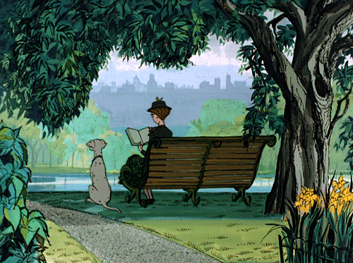
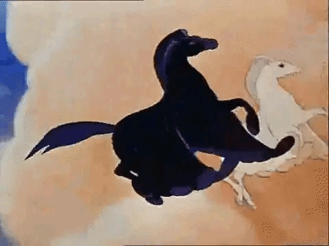

Exploring Figurative Language Through Songs
Welcome!
This is a WebQuest that allows the students to identify and analyze various types of figurative language (simile, metaphor, personification, and hyperbole) through songs and understand its effects on meaning and imagery.
Subject: English
Grade: 12th grade
Keywords: simile, metaphor, personification, hyperbole
Author(s): Marsa Attaqiya, Muhammad Hedi Arsyan Fadillah
An Introduction
Hello Explorers! Have you ever come across a song that sounds so good in your ears, but then when you look up the lyrics, they don't make any sense? The answer to that is probably something called figurative language. What is figurative language? It is basically a way of saying something indirectly using imaginative words. Singers or songwriters often use this writing style to add depth, imagery, and layers of meaning, so we need to read the words many times to grasp the whole message they try to convey to the listeners.
You can download the simplified version of this WebQuest-here.